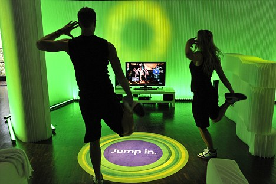

Welcome to our website!!!, Black Dragon Gaming site keeps you up-to-date with the latest in the gaming industry, and also you can purchase them in our site.
New to gaming? Dont know what's the best platform for you?
Well fear no more as we have all the specs and info about new consoles and hardware in the market.
Want to know which genre is right for you?
VIDEO GAMES ARE GOOD FOR YOU? OR NOT? Scroll down to find out
NEWS FEED
10 Ways Video Games Are Good for You
1. Video Games May Slow Down Aging
Male, female, young adult, middle-aged person– all have one thing in common and that's aging. And while getting older and wiser has its perks, there are also a number of natural problems that come about as well. There's
a reason why you see senior citizens driving at 25 MPH even though the speed limit is 45. But just like maintaining a healthy exercise routine can help your body feel 50 when you're 60, our brain can also be kept "in shape".
In fact, a study conducted by researchers at the University of Iowa showed that playing games can do just that. The study had 681 healthy people aged 50 and older play 10 hours of a certain video game for
five to eight weeks, and this is what they found:
“We’ve shown that 10 hours is enough to slow the decline by several years. We saw a range across all our tests from a minimum of a year-and-a-half all the way up to about six-and-a-half years of recovery or improvement. From just
10 to 14 hours of training, that’s quite a lot of improvement”.
It seems performing any task that requires exercising your mind will help it stay sharper, and that includes video games. (Source)
2. Better Decision Maker
C. Shawn Green from the University of Rochester wanted to see how games affect our ability to make decisions. His goal was to test if games, which demand us to view and keep track of moving peripheral images, improve our ability
to receive sensory data and thus help us make more precise decisions. The study had a group of young adults with no gaming experience play an action game for 50 hours. A second group of the same age played a slow-paced strategy
game instead.
After the study, Green had nothing but good things to say:
“Action video games are fast-paced, and there are peripheral images and events popping up, and disappearing. These video games are teaching people to become better at taking sensory data in, and translating it into correct decisions.”
A colleague of his even went on to say that shooters can change the brain by dramatically enhancing many of our low level perceptual functions. Definitely good news for all the Halo and Call of Duty fans out there. (Source)
3. Games Can Help (Not Hurt!) Your Eyesight
There are few gamer kids who grew up without ever hearing their parents say "you're going to go blind watching that screen all day". For a while it did seem like they had a point since we tend to blink much less frequently
while playing a game. This can cause serious problems like eyestrain and dry eye syndrome. Another team of researchers from the University of Rochester sought to prove if games really worsen our vision. The 2009 study involved having a group of experienced first-person shooter gamers play Call of Duty and Unreal Tournament 2004 while more casual gamers played slow games like The Sims 2. After testing, those who played the first-person shooters showed signs of having better vision that the others. Daphne Bavelier, the leader of the study, discovered that playing action games improves an ability called contrast sensitivity function.
This ability helps us discern between changes in shades of gray against a colored backdrop, which is very beneficial while driving at night. (Source)
4. Video Games Can Make You Less Anti-Social
One of the worst stereotypes associated with playing video games is that those who do are awkward social rejects. Even if there plenty of basement-dwelling gamers out there, that doesn't mean all gamers have
problems socializing in public and making friends. Researchers from three different institutions in the UK and Canada recently did their own studies to find out how common antisocial behavior is among gamers. What each one
discovered is that gamers who partake in live social environments are actually the most communicative and friendly people there.
“Gamers aren’t the antisocial basement-dwellers we see in pop culture stereotypes; they’re highly social people," said one of the researchers who went to more than 20 events where gamers get together.
While observing gamers he even went on to admit that they formed stronger relationships than non-gamers due to their matching love of games. (Source)
5. Games Can Enhance Your Ability To Learn
Contrary to popular belief that video games make you bad at school, researchers from the UK found that certain video games can actually enhance our brain flexibility. The study was done at both the University College London and Queen Mary University of London and had 72 volunteers play two different games for 40 hours over six to eight weeks. The games were Starcraft, a fast real-time strategy game, and The Sims, a slower life-simulation
game. Here's what they had to say:
"This result supports the notion that the within-StarCraft gaming manipulation led participants to manage more information sources during game play, thus leading to enhancements in cognitive flexibility."
In other words, the people who played Starcraft boasted better cognitive flexibility since the game requires constant thinking and player input. So while slower games may not offer the same benefit, it's cool
to know that our favorite fast-paced games are helping us become better learners while entertaining us. (Source & Source)
6. Help Improve Hand-Eye Coordination
There are many professions that require having better hand-eye coordination than the average person. Of course, surgeons depend on theirs to not only perform a successful operation but also make sure they don't nick an artery or vital organ.
That's why a lot of aspiring surgeons are now required to perform virtual surgeries for training. Curious to see who could perform better at these virtual surgeries, Scientists at the University of Texas Medical Branch brought together a group of high school kids, college students, and medical residents. After testing the three groups to see who could outperform the others, the scientists were surprised to discover that the high school students did the best.
Why? Simply put, the high school kids played video games at least two hours a day while the medical residents rarely had time to play. While one of the researchers insist that the residents would still do better in an actual
surgery, the study is one of many proving that our favorite games can help improve our hand-eye coordination. (Source)
7. Improved Focus and Attention
One of the biggest worries among parents today is that their children sit in class thinking about Minecraft and Pokemon instead of listening to the teacher. To see if games instead helped kids pay more attention by improving cognition and
perception, a researcher named Vikranth Bejjanki performed a few experiments alongside several colleagues. These tests first involved having two groups, experienced and inexperienced gamers, perform several perceptual tasks such as pattern discrimination.
The gamers ended up outperforming the other group who rarely, if ever, played games before the experiment. The paper concludes with the following:
"The enhanced learning of the regularity and structure of environments may act as a core mechanism by which action video game play influences performance in perception, attention, and cognition."
In other words, playing games improves several abilities, including paying attention. (Source)
8. Video Games May Help Treat Depression
A few years ago researchers in New Zealand sought to find out if video games can be used to treat mental disorders like depression. This was done with SPARX, a game specifically
designed to provide therapy to teenagers in a way that's more active and enjoyable than regular counseling.
Over 168 teens with an average age of 15 participated, with all of them having shown previous signs of depression. While half of the group received traditional counseling, the other group got to play SPARX.
The game involves creating avatars to rid the virtual world of enemies representing gloomy, negative thoughts. Every stage also introduced general facts about depression, including ways to relax and deal with negative emotions. Here's their
conclusion after discovering that SPARX players did better at recovering from depression than the other group:
"SPARX is a potential alternative to usual care for adolescents presenting with depressive symptoms in primary care settings and could be used to address some of the unmet demand for treatment."
Of all the benefits from video games on this list, this is the one that most people already know. This is likely attributed to Nintendo's Wii system that introduced motion control gaming to players all over the world. Active games like Wii Sports and Wii Fit are to this day found in hospitals and retirement homes. Researchers at the University of Oklahoma Health Sciences Center recently performed test to see how much better active games are for kids
compared to activities like watching TV and browsing the internet. Tests involved measuring the heart rate, self-reported exertion, and energy expenditure of kids aged 10 to 13 while they performed three specific activities:
playing active video games
watching television
walking on a treadmill
The team discovered that playing motion-control games was was just as beneficial as walking on a treadmill at a speed of 3.5mph. Both exercises had the kids burning the same amount of calories, which was nearly three times
more than the children just watching Netflix. (Source)

10. Video Games Can Help Couples
While there are plenty of ways for couples to have fun together and relax, psychologists from the University of Denver wanted to find out if playing video games was one of them. This is an interesting study because research
shows men care more about this part of a relationship than women do. At the same time, most guys are known to either play games alone or with other male friends– not so much their girlfriend, wife, etc. The study, which actually started
in 1996, had 200 couples in their second year of marriage decide what aspect of their relationship was most important. Their answers demonstrated a strong correlation between the importance of partaking in fun, exciting activities together
and a good relationship. Howard Markman, one of the psychologists involved in the study said this:
“The more you invest in fun and friendship and being there for your partner, the happier the relationship will get over time.”
So even though the experiment didn't involve video games, it serves to prove that couples who game together tend to have happier, healthier relationships. (Source)
Conclusion
Just like video games themselves, the field of studying how games help or hurt us is still very new. There is still plenty of research to be done before we find out how the virtual characters, stories, and worlds we love
really affect on a physical and mental level. Even so, feel free to show your friends and family this list if they're the kind of people who still assume games are to blame for obesity, school shootings, and antisocial behavior. It will help
them realize that instead of giving us problems, games may have actually been improving our lives in some ways.